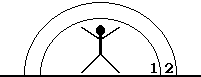

Согласно большинству дефиниций ноосферой принято называть сферу, на которую
распространяется действие разума , т.е. сферу генерации (производства), систематизации,
унификации, отделения от негативных и мусорных понятий, архивации, воспроизведения,
распространения и хранения всего многообразия позитивных знаний, полученных с участием
человеческого интеллекта, пополняемых полезными творческими инновациями в области науки и
культуры.
Термин "ноосфера", впервые введенный в научный оборот в 1927 году французским ученым Э. Леруа,
нашел отражение также в трудах академика В.И. Вернадского. Изучая это понятие, ученый впервые
осознал и попытался осуществить синтез естественных и общественных наук для более правильного
анализа глобального воздействия человека на окружающую среду.
Ноосфера генерирует не просто позитивные знания в форме понятий, передаваемых при помощи сугубо
научных пояснений, художественных приемов, произведений искусства, в ней они формализуются в
истины (абсолютные или предельно познанные абсолютные, относительные), которыми потенциально
все очередное актуально живущее поколение людей (человечества), но прежде всего каждый
отдельный человек могут и должны оперировать (пользоваться) ежедневно в процессе своей
жизнедеятельности, регулируя свое поведение, а также обмениваясь информацией (распространяя ее)
в рамках информационного метаболизма .
Вследствие этого между каждым человеком и ноосферой происходит постоянный обмен информацией о
временной и качественной трансформации понятий в сторону их истинности, о появлении новых, в
т.ч. и негапонятий. Если в начальный период своей жизни в процессе своего воспитания и
образования человек в основном только берет из ноосферы информацию о понятиях, выработанную
предыдущими поколениями людей (в противном случае он превратится в Маугли), то со временем,
после становления у него разума и способности к творческой активности, у любого индивидуума
появляется возможность помещать произведенную уже им информацию, касающуюся прогресса понятий,
в ноосферу (в виде научных статей, книг, учебников, законопроектов, описаний открытий и
изобретений, литературных, художественных и музыкальных произведений), истинность и полезность
которой определяется экспертами, пользователями и ИСТОРИЕЙ.
Далеко не вся первоначально помещаемая в ноосферу информация подходит под стандарт истины
(абсолютной или даже относительной). Большей частью это все-таки преходящие суждения,
подпадающие под определения: ложный посыл, "информационный мусор" или бред, далекие от
позитивных понятий и засоряющие ноосферу. Поэтому так важно как можно скорее очищать ноосферу
от такого рода информации, отправляя ее с помощью разума в негасферу.
Но иногда, как крупинки золота пустую породу, в ноосферу попадают действительно шедевры
абсолютных (или близких к ним относительных) истин. И тогда, если они вовремя оказались
зафиксированными, они занимают подобающее им место в золотом фонде БИБЛИИ СОВРЕМЕННЫХ ЗНАНИЙ,
откуда им прямая дорога в энциклопедии, толковые словари, учебники, художественные и
музыкальные фонды, в классику и т.п., но главное, в ЛИЧНОСТНЫЙ МИНИМУМ ЗНАНИЙ, подлежащий
обязательному овладению каждым человеком, гражданином, жителем планеты.
Помимо этого минимума существуют также СПЕЦИАЛИЗИРОВАННЫЕ ЗНАНИЯ, очень важные для
специалистов, но необязательные к познанию для остальных. И только последняя категория знаний -
НИКЧЕМНЫЕ или ВРЕДНЫЕ, которые вообще никому не рекомендуется знать, должна помещаться в
негасфере для последующего захоронения, ликвидации.
Ноосфера имеет материальную основу и, как и все материальное, развивается во времени -
пространстве - качестве.
|
| Что такое ноосфера?
Ноосфера - современная (по меркам геологического времени) стадия развития биосферы, связанная с
появлением в ней человека. Понятие было введено французским математиком и философом Эдуардом Ле
Руа в 1927 году. Сам он подчёркивал, что пришёл к этой идее совместно со своим другом -
крупнейшим геологом и палеонтологом-эволюционистом и (одновременно!) католическим философом
Пьером Тейяром де Шарденом. При этом Ле Руа и Шарден основывались на лекциях по геохимии,
которые в 1922-23 годах читал в Сорбонне Владимир Иванович Вернадский (1863-1945). С именем
Вернадского и связано в первую очередь появление ноосферного учения.
В ноосферном учении Человек предстаёт укоренённым в Природу, а "искусственное" рассматривается
как органическая часть и один из факторов (усиливающийся во времени) эволюции "естественного".
Обобщая с позиции натуралиста человеческую историю, Вернадский делает вывод о том, что
человечество в ходе своего развития превращается в новую мощную геологическую силу, своей
мыслью и трудом преобразующую лик планеты. Соответственно, оно в целях своего сохранения должно
будет взять на себя ответственность за развитие биосферы, превращающейся в ноосферу, а это
потребует от него определённой социальной организации и новой, экологической и одновременно
гуманистической этики.
Ноосферу можно охарактеризовать как единство "природы" и "культуры". Сам Вернадский говорил о
ней то как о реальности будущего, то как о действительности наших дней, что неудивительно,
поскольку он мыслил масштабами геологического времени. "Биосфера не раз переходила в новое
эволюционное состояние… - отмечает В.И.Вернадский. - Это переживаем мы и сейчас, за последние
10-20 тысяч лет, когда человек, выработав в социальной среде научную мысль, создаёт в биосфере
новую геологическую силу, в ней не бывалую. Биосфера перешла или, вернее, переходит в новое
эволюционное состояние - в ноосферу - перерабатывается научной мыслью социального человека"
("Научная мысль как планетное явление"). Таким образом, понятие "ноосфера" предстаёт в двух
аспектах:
1. ноосфера в стадии становления, развивающаяся стихийно с момента появления человека;
2. ноосфера развитая, сознательно формируемая совместными усилиями людей в интересах
всестороннего развития всего человечества и каждого отдельного человека".
|
| Элементная база ноосферы
Окружающий нас мир загадочен и разнообразен. Для кого-то он велик, для кого-то мал,
для кого-то прост, для кого-то сложен, для кого-то радостен и светел, для кого-то наполнен
горем и страданиями. Все это зависит от способностей каждого человека его воспринимать,
понимать, осознавать, уметь существовать, вернее, жить в нем. Способности эти сугубо
индивидуальны, т.е. присущи только данному конкретному человеку-индивиду и у разных людей имеют
довольно существенные различия.
В то же время на протяжении тысячелетий способности воспринимать, постигать мир развиваются и у
всего человечества в целом. Эти общие способности складываются из индивидуальных способностей
самой прогрессивной, наиболее развитой части каждого поколения человечества. Однако эти
способности не остаются неизменными. Они развиваются во времени, все более совершенствуясь от
года к году, от поколения к поколению, обеспечивая таким путем прогресс всего человечества. Уже
Платон 2,5 тыс. лет назад воспринимал мир как божественный порядок, развернутый высшим разумом
"прекрасный строй вещей". Он относил это и к уровню социума, и к космосу на макроуровне.
В настоящее время общечеловеческое восприятие окружающего нас мира достигло большой, неведомой
ранее широты и глубины его познания. Человеческие интересы, подкрепляемые новейшими
техническими возможностями, вышли, с одной стороны, в реальный макрокосмос, в пространство
околоземной Вселенной, с другой, углубились в микрокосмос, в область процессов, протекающих в
органах организмов, в живой клетке, в генах, в макро- и просто молекулах, атомах, в субатомных
частицах.
Однако и сейчас по-прежнему отдельные индивиды видят и воспринимают окружающий их мир
по-разному в силу неодинаковости их индивидуального сознания, вследствие чего и живут
по-разному. У каждого индивида своя сфера окружающего мира: кто-то его видит целостным и
безграничным в рамках развивающейся Вселенной, а для кого-то он ограничивается рамками своей
квартиры, работы, или, что тоже бывает, тюремной камеры, либо вообще искаженного собственного
мироощущения. Вследствие этого у каждого человека складывается своя специфичная только для него
сфера восприятия, постоянного внимания, приложения умения созидать или разрушать, выражения
интересов или безразличия.
Графически это можно изобразить посредством своего рода сфер макрокосмоса, окружающих человека
и имеющих следующий охват внимания, умения и интересов:
1. Я (эго) и все, что с ним связано - здоровье, образ жизни, знания, умения, культура, манеры
поведения, система питания, система ценностей, личные наклонности, вкусы, чувства, способности
и недостатки, внутренний мир, поддержание в норме своего тела и сознания, самосовершенствование
и т.д.
2. Дом, семья и все, что с ними связано - родители, супруг, обустройство дома, квартиры, дети,
их воспитание, образование и обучение, огород, домашние животные, уют, чистота, телевизоры,
телефоны, другая домашняя оргтехника, гараж, система поддержания в порядке, ухода за
непосредственным окружением и его совершенствование и т.д.
3. Работа, служба и все, что с ней связано - профессия, должность, кабинет, станок,
квалификация, отношение к служебным обязанностям, профессиональные интересы, достижения и
открытия в профессиональной сфере, повышение профессионального уровня знаний, карьера,
командировки, отношения с руководством, с подчиненными и т.д., а также увлечения (хобби).
4. Город, местность и все, что с ними связано - улицы, дома, парки, школы, магазины, система
право- и охраны порядка, пруд, фонтаны, скверы, их убранность и ухоженность, городские власти,
снабжение продуктами, теплом, водой, газом, общественный транспорт, теле- и радиовещание,
театры, кинотеатры, больницы, бани, бензоколонки, общественное самоуправление, криминогенность,
экология, и т.д., а также сферы культуры , включая театр, кино, музыку, живопись, скульптуру и
т.п., и прикладной науки (т.е. научные открытия, которые следует знать всем).
5. Страна, государство и все, что с ним связано - политический строй, система управления, ее
эффективность, персоналии во власти, какие законы, налоги, цели, безопасность, идеология,
система ценностей, система образования и просвещения, геополитические установки, программа
национального развития, уровень общественного сознания и т.п.
6. Континент, часть света и все, что с ними связано - ближайшие страны-соседи, граничащие с
данной страной, уровень их развития и степень развитости общественного сознания, степень их
дружественности и/или враждебности, перспективы сотрудничества, целесообразность взаимного
сближения/отдаления.
7. Планета Земля и все, что с ней связано - погода, озоновые дыры, магнитные бури, тайфуны,
уменьшение запасов пресной воды, нефти и газа, происхождение растительного и животного мира,
тенденции в развитии ныне живущего поколения человечества, увеличение народонаселения, его
состав, изменения климата, опасность ядерного или экологического самоуничтожения, глобальное
загрязнение морских бассейнов, атмосферы и суши и т.д.
8. Солнечная система, Вселенная и все, что с ними связано - история возникновения, возможные
опасности из космоса (астероиды, кометы, вредное для человека излучение), перспективы его
освоения, расселения человечества за рамки собственной планеты, поиск контактов с внеземными
цивилизациями и т.д.
9. Мир и все, что с ним связано - всемирные законы развития материального Мира (движение во
времени-качестве-пространстве ), особенности бытия, версии зарождения вселенных, природа
мышления, структура сознания и предельные способности человеческого разума познавать насущное,
вечное и бесконечное, творить новое.
Таким образом, в зависимости от сфер внимания, умения и интересов, куда проникает и какие
захватывает индивидуальный менталитет человека, все люди делятся на индивидов с узким и с
широким макрокосмическими кругозорами:

Если макрокосмический кругозор человека ограничен лишь первой сферой - он " эгоист ", если
второй - он " обыватель ", если третьей - он " карьерист ". Наличие интересов в четвертой сфере
дает ему "звание" общественника , культурного человека , пятой - гражданина , шестой -
интернационалиста , седьмой - космополита , зеленого , восьмой - астрофизика , девятой -
философа .
Но сферы интересов человека не ограничиваются только МАКРОкосмосом, его внимание простирается и
в МИКРОкосмос. Графически это также можно изобразить сферами уже теперь микрокосмоса,
окружающими человека, которые охватывают следующие структуры материальных образований:
1. Предметы и объекты макрокосмоса и все, что с ними связано - люди, здания, автомобили,
животные, растения, предметы личного и производственного пользования, т.е. наш ежедневный
обыденный мир.
2. Структурные компоненты предметов, объектов и все, что с ними связано - органы, детали, части
(запчасти), элементы структур, источники энергии и питания, схемы и карты, и т.д.
3. Макрохимические компоненты , прикладная химия и все процессы, с ними связанные -
пищеварение, биохимия, вирусология, садово-огородные знания, процессы сжигания и сгорания,
окисления и крашения, чистки и глажения, и т.п.
4. Строение материи на химическом уровне.
5. Строение материи на физическом уровне.
6. Строение материи на субатомном уровне.
7. Строение материи на субядерном уровне.
8. Строение материи на субкварковом уровне.
9. И т.д. вглубь материи (эфир, вакуум, виртуальные частицы, торсионные поля и т.п.).
В зависимости от сфер внимания, знаний и интересов, куда проникает и какие захватывает
индивидуальный менталитет человека, все люди делятся также и на индивидов с узким и с широким
микрокосмическими кругозорами:
|
Итак, с некоторых пор общечеловеческое восприятие мира достигло той стадии его
понимания, когда этот загадочный мир отделился, наконец, от развивающегося внутреннего мира
человека и превратился в существующую независимо от сознания объективную реальность, в бытие .
Но если окружающий нас мир в целом и стал независимым от сознания человека (каким он, впрочем,
и является всегда, а с помощью сознания происходит лишь его индивидуумное и общечеловеческое
осознание), то индивидуальная сфера окружающего мира, отражающая персонифицированный кругозор,
индивидуальное восприятие информации, рефлексию на события и явления, суждения и действия
других людей, продолжает в полной мере зависеть от степени развитости менталитета данного
индивида, и в первую очередь от его сознания. Вот почему правильнее будет говорить: " Развитое
индивидуальное сознание каждого человека определяет его кругозор, его индивидуальное бытие, в
итоге отражаясь на общественном ", а не наоборот. Таким образом, мы имеем как бы два варианта:
1. Для развитого , зрелого сознания, когда: индивидуальное сознание воздействует на
индивидуальное бытие и далее на общественное бытие .
2. Для не(до)развитого сознания, когда: индивидуальное сознание подвергается воздействию
индивидуального бытия, на которое воздействует общественное бытие .
Прежде чем начинать разбираться, почему развитое сознание определяет наше бытие, а неразвитое
определяется им, необходимо понять суть понимания самого реального бытия . Для облегчения этого
человечество издавна расщепило, разделило его на понятия . Это стало необходимо людям на
определенном этапе их развития для упрощения возможности осознавания бытия, одинакового его
понимания с тем, чтобы продолжить существовать в нем по ходу дальнейшего своего
совершенствования. Понятиями человечество стало пользоваться с момента появления у него первых
признаков зреющего сознания, отличного от менталитета животных. Как писал Кант: "Посредством
чувственности предметы нам даются , и только она доставляет нам созерцания; мыслятся же
предметы рассудком, и из рассудка возникают понятия . Таким образом, всякое человеческое
познание начинается с созерцаний, переходит от них к понятиям и заканчивается идеями. Всякое
основанное на разуме познание исходит из понятий или из конструкции понятий; первое называется
философским, а второе - математическим."
Все бытие с некоторых пор стало возможным представлять и познавать с помощью понятий ,
постижение которых нами через свое индивидуальное сознание и определяет наше индивидуальное
бытие. Но перед тем как пользоваться понятиями, мы прежде должны их приобрести и осмыслить и
лишь тогда применять в своей практической жизни. В понятия воплотились, стали олицетворяться
ими не только предметы и явления в конкретной и обобщенной форме посредством фиксации общих и
специфических их признаков, но и различные мысли, суждения, отражающие события
действительности, связи между предметами и явлениями, основанные на их свойствах и отношениях
между ними. В итоге понятия стали самыми распространенными предметами пользования человека,
объектами и инструментами его сознания, являясь сами по себе, по словам Ленина, "высшим
продуктом мозга, высшего продукта материи".
Любой объект, предмет или явление могут обозначаться в понятиях как конкретно, так и обобщенно,
что достигается за счет применения в процессе познания таких умственных действий, как
абстракция, идеализация, обобщение, сравнение, определение. Посредством отдельных понятий и
систем понятий отображаются фрагменты действительности, изучаемые различными науками и научными
теориями. Энгельс отмечал, что "результаты, в которых обобщаются данные опытов естествознания,
суть понятия".
В понятиях часто отражаются такие предметы и их свойства, которые невозможно представить в виде
наглядного образа. При помощи понятий отображаются фрагменты как актуальной действительности,
так и явлений в их исторической ретроспективе. Такой подход облегчает видение и осознание
процесса постоянного изменения и развития изучаемой действительности и явлений, что
способствует углублению наших знаний о них, помогает экстраполировать ход их дальнейшего
развития, предвидеть БУДУЩЕЕ.
И. Кант утверждал также: "Чтобы познать a priori (т.е. заранее, независимо от опыта)
возможность определенных природных вещей, требуется еще, чтобы было дано соответствующее
понятию априорное созерцание , т.е. чтобы понятие было конструировано. Но познание разумом,
основанное на конструировании понятий, есть познание математическое. Следовательно, чистая
философия природы вообще, т. е. такая, которая исследует лишь то, что составляет понятие
природы вообще, хотя и возможна без математики, но чистое учение о природе, касающееся
определенных природных вещей (учение о телах и учение о душе), возможно лишь посредством
математики; и так как во всяком учении о природе имеется науки в собственном смысле лишь
столько, сколько имеется в ней априорного познания, то учение о природе будет содержать науку в
собственном смысле лишь в той мере, в какой может быть применена в нем математика."
Деление на понятия в сущности произвольное, но приживаются только те, которые оказались
практически наиболее полезными, часто употребляемыми. По мере понимания и осознания бытия все
время вводятся новые понятия, поэтому очень важно, чтобы их вводили в практику или хотя бы
подвергали экспертизе, обобщали специалисты по тем или иным аспектам бытия, с
философско-филологическими способностями. Это достаточно сложный и кропотливый труд.
Понятия непосредственно закрепляются и выражаются в языковой форме - в виде отдельных слов и
словосочетаний, своего рода их ярлыков, надписей на них ("стол", "атом", "человек", "любовь",
"добро", "совесть", "интересная книга", "специальные знания" и т.д.). Иногда для разъяснения
того или иного понятия требуется целое объяснение, для чего создаются толковые словари
(например, толковый словарь В. Даля), энциклопедии. Знание любого иностранного языка означает
знание идентичности понятий на обоих языках. В то же время на языках многих малочисленных
народов отсутствуют многие понятия, особенно новые, современные. Поэтому национальное
обособление некоторых народов, их нежелание пользоваться более развитыми языками тормозит
развитие их национального сознания, а следовательно, их общий прогресс, суживает их бытие и
жизненную перспективу, чего не понимают их националистические лидеры, да и сами эти народности.
Разница в знаниях людей образуется вследствие неодинакового освоения (и усвоения) ими
общеизвестных понятий, уже не говоря о новых, более современных, как в количественном, так и в
качественном выражении. Разногласия между людьми часто также возникают из-за неправильного
трактования ими тех или иных понятий, непонимания хода развития обозначаемых с их помощью
событий и явлений.
Таким образом, понятие стало и является не только ключевым инструментом каждодневного
пользования каждого человека, благодаря которому он может существовать в обществе себе
подобных, оно, по сути, обеспечивает весь ход дальнейшего развития этому существованию. Поэтому
так важно, чтобы люди не только пользовались всем набором известных понятий, но и изучали
новые, понимали их одинаково, совершали одинаковые алгоритмы действий, соответствующие каждому
из них, уточняли, сверяясь с ними, свои нормы и правила поведения.
На протяжении всей своей истории человечество создает, собирает, уточняет и доводит до
совершенства каждое понятие, приспосабливая его к использованию как можно большим числом членов
общества. Существо понятий затрагивает все аспекты как реальной, так и виртуальной
действительности, начиная от природы самого человека, его каждодневной практической
деятельности и заканчивая самыми глубинными сторонами его внутреннего и внешнего миров. При
этом важно достичь такого состояния, чтобы мироощущение, миропонимание максимально совпадало у
большинства членов любого данного сообщества, а в итоге - у человечества в целом. В этих целях
каждый человек получает школьное, а затем и высшее образование, пишутся учебники, толковые
словари, энциклопедии, правила поведения, кодексы, законы, конституции, всеобщие Декларации,
созываются международные форумы и конференции, работают воспитатели, преподаватели, профессоры,
функционируют арбитражи, суды всех инстанций вплоть до Международного.
Здесь необходимо коснуться одной из самых интересных и до сих пор до конца неразгаданных
категорий бытия, каковым является время , т.е. то, с чем каждый из нас без исключения также
сталкивается ежедневно, ежечасно, ежеминутно, ежесекундно, каждое мгновенье, каждую долю
мгновенья...
Время, относящееся к разряду глобальных категорий, нельзя остановить. Поэтому мы постоянно
следим за ним по часам, пытаясь угнаться за его ходом, а оно не ждет и неумолимо движется
вперед со скоростью 24 часа в сутки, перенося каждую минуту, каждый час, каждый день и т.д. из
нашего БУДУЩЕГО в наше невозвратимое ПРОШЛОЕ. Мало кто из нас по-настоящему осознает, что все
мы, люди, как и вся окружающая нас природа, размещены на острие секундной стрелки часов,
представляющей актуальную действительность , с которой перемещаемся сквозь события и явления
бытия в течение всей своей жизни. Размеры актуальной действительности сколь угодно малы и
фактически равны величине 1/ (единице, деленной на бесконечность).
(где AD - точка Актуальной действительности , являющаяся точкой отсчета, перемещающейся по
ординате времени t в сторону +t со скоростью 24 часа в сутки, преобразующей будущее +t в
прошлое -t. Точка AD всегда характеризуется конкретным, присущим только ей временным
обозначением - "датой", включающим обозначение года, месяца, числа, дня недели, часа, минуты,
секунды, миллисекунды и т.д., которое в целях упрощения часто произносится не полностью).
|
В связи с этим еще в глубокой древности люди заметили и зафиксировали в виде
истины следующее положение:
"TEMPORA MUTANTUR, ET NOS MUTANTUR IN ILLIS" ,
что в переводе с латинского означает: "Времена меняются, и мы меняемся с ними" .
В чем же собственно происходят изменения, что меняется в бытии со временем ? Прежде всего, идет
изменение осознания человеком (в общем, собирательном смысле этого слова) понятий, из которых
состоит бытие, т.е. количественный (путем добавления новых) и качественный (путем их
совершенствования, углубления) их рост. Понятия сами по себе не есть что-то застывшее, раз и
навсегда устоявшееся. Каждое понятие развивается в сторону его истинности, которая, в свою
очередь, все больше приближается к действительной реальности. Истина - русское слово. Им
обозначается то, что есть, что верно, подлинно, точно, справедливо. Иными словами, то, что на
самом деле есть, и есть истина .
Для упрощения пользования понятиями человек придает им мерность и соразмерность путем шкал,
сравнений. Так Кант, например, предложил свою " шкалу субъективной истинности ": "Признание
истинности суждения, или субъективная значимость суждения, имеет следующие три ступени в
отношении убеждения (которое имеет также объективную значимость): мнение, веру и знание .
Мнение есть сознательное признание чего-то истинным, недостаточное как с субъективной, так и с
объективной стороны. Если признание истинности суждения имеет достаточное основание с
субъективной стороны и в то же время считается объективно недостаточным, то оно называется
верой . Наконец, и субъективно и объективно достаточное признание истинности суждения есть
знание . Субъективная достаточность называется убеждением (для меня самого), а объективная
достаточность - достоверностью (для каждого)."
Однако предложенная Кантом шкала не отражает развития во времени объективной достоверности
суждения или понятия. Поэтому для каждого понятия существует своего рода " шкала объективной
истинности ", базирующаяся на ординате времени, отображающая этапы развития понятия или
суждения на пути к истине :
0) неведение о предмете понятия 1) первое представление о предмете понятия 2) более углубленные знания ( относительная истина ) 3) полные знания о сути
понятия ( абсолютная истина ).
Людям, имеющим способности овладеть каким-либо понятием на этапе 2-й или 3-й ступени шкалы,
нулевая и первая ее ступени представляются как устаревшие знания. Однако при этом необходимо
всегда помнить о принципе соответствия , который вносит в развитие каждого истинного понятия
строгую каскадность по нарастающей.
Кроме того, развитие понятия может пойти вообще по ложному, ненаучному, часто тупиковому пути.
Такого рода отклонения от верного, правильного направления поиска истины приводят, как правило,
к бреду . Вследствие этого в жизни имеет место столько недопонимания между отдельными людьми,
целыми народами, доходящего до агрессивного антагонизма, причиной чему оказывается всего лишь
нахождение на разных ступенях познания тех или иных понятий , или вообще чье-то движение в
ложном, бредовом или глубоко устаревшем направлении поиска их смысла, или неудовлетворительное
состояние тех или иных наборов знаний. Рассудочные способности человека, его разум , логика
мышления поэтому являются мерилом, критерием истины и означают умение определять верное
направление поиска необходимых понятий, выбирать из них позитивные, наиболее истинные, а если
нужно, создавать (при определенных условиях) новые и оперировать только и именно ими.
В качестве классического примера хочется напомнить случай с Аристотелем, который, развив
изначально изложенное Платоном понятие о первооснове мира, наполнил его новым, более верным
содержанием. В итоге он был вынужден расстаться со своим учителем, продолжавшим настаивать на
устаревшей точке зрения по этому вопросу. Именно тогда родилось известное изречение: "Платон
мне друг, но истина дороже!" В то же время Аристотель указывал: "Наука, практичность, мудрость
и разум суть те средства, которыми мы достигаем истины и благодаря которым никогда не ошибаемся
относительно того, что актуально и изменчиво, но превыше всего здесь следует считать разум."
Существует немало понятий, про которые нельзя со 100% уверенностью сказать, что они "абсолютные
истины" в данной сфере, т.е. что впредь не будут выявлены в этом направлении знаний новые
понятия, для которых они могут стать в положение "относительной истины". В этом случае такие
понятия следует квалифицировать как "предельно познанная абсолютная" или относительная
"истина". Это означает, что выше, чем данные понятия, в поисках истины в этом направлении
знаний на данный момент пока еще не существует, но не исключено, что со временем это положение
может позитивно измениться и появятся новые понятия, более приближенные к абсолютной истине,
либо в существующее понятие будет вложен более правильный и больше соответствующий реалиям
действительности смысл. Таким образом, понятия как бы "живут" своей жизнью.
Вместе с тем, наряду с основной, позитивной группой понятий, переводимых на большинство широко
используемых языков мира, существуют еще две специфические группы понятий. К первой из них
относятся понятия узкоспециализированные, узконаучные, становящиеся предметами псевдонаучного
китча, а также групповые, жаргонные - так называемая "феня" и т.п., т.е. понятийный мусор,
который осложняет работу сознания, прежде всего общественного. Поэтому культурная,
интеллигентная, строго научная среда общества такого рода понятия избегает, не воспринимает или
игнорирует.
Кроме того, существует большая группа понятий ложного, ненаучного направления, означающих
далекие от истины понятийные изыски, которые уводят знания индивида в неверную сторону,
способствуя созданию ложных представлений, искривленного понимания действительности. Сюда же
относятся понятия, противные разуму, отражающие негативные стороны бытия. К такого рода
понятиям можно отнести, например, такие, как "наркотик", "черт", "привидение", "ад",
"мазохизм", "война", "фашизм", "террорист", "убийца", "фанатик", "шизофрения", "трансвестит" и
т.п. Всю указанную группу можно назвать негативными понятиями или негапонятиями .
|
Религии всех направлений, имеющие в своих учениях немало негапонятий, тем не менее, во все
времена выражали преклонение перед всем истинным. В качестве подтверждения можно привести слова
Пророка Мухаммеда: "Аллах - это ясная истина". А никакая не вера. Мусульманин может и должен
склониться только перед ИСТИНОЙ. Точно так же, как и христианин. По словам Христа: "Бог есть
дух и ИСТИНА". А не "любовь". Молиться Богу в буквальном смысле означает "постигать истину".
Итак, все человечество в целом, как и каждый человек в отдельности, живет по понятиям (также
негапонятиям), т.е. определениям и одинаковому пониманию всего того, что любого человека (и
человечество в целом) окружает в повседневной жизни. Для всех понятий характерно:
1. движение к истине (от неведения к абсолюту);
2. структурирование и дальнейшая детализация на составляющие, или поясняющие элементы
(субпонятия);
3. масштабирование или математическое описание (для измерения или сравнения);
4. функциональная полярность (позитивное, негативное, нейтральное).
Каждое понятие (негапонятие), если оно задействовано, отражается в сознании человека и влечет
за собой в реальной жизни то или иное действие индивида, производимое по определенному порядку,
т.е. алгоритму . И все это развивается в определенной последовательности во времени, качестве и
пространстве. Мировоззрение и кругозор людей формируются, а нередко меняются под влиянием тех
или иных вновь обретенных (познанных) понятий (негапонятий).
Здесь следует напомнить об еще одной, очень важной глобальной категории - о движении Материи в
качестве , которую следует хорошо знать. (Подробнее о ней можно прочитать в книге " Диалектика
материи - Системный подход к основам философии"). Именно результаты качественно-временных
изменений фиксируются (распространяются) в ипостаси третьей глобальной категории материи - в
пространстве , шкалой измерения которого может служить и линейка, и километровые столбы, и
световые минуты, часы, годы. В свою очередь, нарастающий перечень функционального разнообразия
понятий окружающего мира, обладающих своими специфическими свойствами, характеристиками,
параметрами, является шкалой измерения категории качество .
Временные и качественные изменения касаются всего. Затронули они в свое время и животный мир,
возвысив одних его представителей над другими. Затрагивают эти изменения и современное нам
человеческое общество, возвышая одних его членов над другими.
В чем же разнятся люди и как это связано с течением времени , с движением в качестве ?
Главным различием между людьми, и уж тем более, тем основным, что отличает их от животных,
является наличие и степень развитости их рассудка , т.е. способности к восприятию истинных
понятий, суждений и правил, вниканию в них и правильному оперированию ими, следованию им,
расширению своего кругозора, объема знаний. С помощью же рассудка , являющегося, таким образом,
единственным, совершенствующимся во времени инструментом, мерилом, критерием истинности,
осуществляется распознавание бреда, мусорных и негапонятий, избавление от них. Поэтому между
собой люди отличаются в результате помимо прочего широтой кругозора, развитостью менталитета и
степенью искаженности их сознания.
Разум , по всем определениям, является более высокой рассудочной ступенью, и его наличие у
человека предусматривает не только его умение правильно оперировать истинными понятиями,
суждениями и правилами, не только иметь широкий кругозор, но и способность уточнять неясные
понятия, создавать, творить новые, выбраковывать и отбрасывать бредовые, мусорные и негапонятия
более широкого значения, все более обогащая тем самым общечеловеческие знания. Кант под разумом
подразумевал также способность человека осуществлять связь с окружающим миром через
долженствование .
В этой связи одним из самых важных занятий человечества, если не самым главным и полезным,
всегда являлся сбор, распознавание, уточнение и совершенствование понятий, их унификация,
отделение от бредовых, мусорных и негапонятий и доведение до степени абсолютной истины,
уменьшающей степень риска в результате ошибочности при пользовании ими в каждодневной жизни при
их трансформации в алгоритмы действий. Именно эта кропотливая созидательная деятельность
человечества, на которую способны лишь лучшие его умы , осуществляется на протяжении многих
веков, и даже тысячелетий, в ноосфере . Результатом этой деятельности является постоянно
обновляемая, до сих пор пока разрозненная, а поэтому по-своему виртуальная
БИБЛИЯ СОВРЕМЕННЫХ ЗНАНИЙ.
Следует иметь в виду, что наряду с ноосферой существует также и негасфера , своего рода
понятийная мусорная яма, чрево мракобесия, зеркало отрицательных сторон жизни, где скапливаются
мусорные и негапонятия. Пополнение негасферы осуществляется за счет знаний и понятий,
означающих действия, относящиеся к худшим поступкам и суждениям человекообразных индивидов,
низкопробного жаргона, сверхмаргинальных рисунков, какофонической музыки. Для разумного
человека негасфера - это понятийная свалка, либо место захоронения, где группируется все
омерзительное, противоестественное, ложное, несвойственное разуму, прогрессу.
|
| Локализация и конфигурация ноосферы
Для установления пространственного местонахождения ноосферы необходимо мысленно проследовать по
всей известной пространственной директории сверху донизу и определить положение ноосферы,
используя принцип матрешки (меньшее внутри большего).
Таким образом, следуя внутрь по цепочке:
Мир (все мыслимое бесконечное пространство, какое только может представить
себе человеческое воображение)
наша Вселенная (существуют версии, что она не одна)
Метагалактика (обозримая часть Вселенной)
наша Галактика (Млечный путь)
наша звезда (Солнце) и все то, что ее окружает, т.е. Солнечная система
наша планета (Земля)
геосфера (поверхность Земли)
биосфера (органический мир Земли, включая растительный)
зоосфера (животный мир)
гуманосфера (человечество и все, что с ним связано)
интеллектосфера (суммативная мозговая масса, определяющая потенциальную
способность человечества к мышлению)
инфосфера (весь объем хранящейся, передающейся и создающейся с помощью
человеческого интеллекта информации), в итоге мы, наконец, добираемся до
ноосферы (сферы разума, области фиксации осознанных с помощью совокупного
интеллекта человечества понятий: известных абсолютных, временно относительно абсолютных истин)
и
негасферы (сферы невежества или нездорового воображения, хранилища далеких от
истин негапонятий, а также просто мифов и разного рода бреда, сочинений ментально больных или
недообразованных людей).
Развитие ноосферы во времени
Зарождение первых проблесков ноосферы произошло около 100 000 лет тому назад, т.е. при переходе
человека в процессе эволюции с уровня "Homo erectus" ("Человек прямостоящий") на уровень "Homo
sapiens" ("Человек разумный"). Особенно активное развитие ноосферы наблюдается в наше время, в
период дальнейшей эволюции человека по уровню "Homo sapiens sapiens".
Формы ноосферы
С момента зарождения ноосферы все полученные человеком знания (понятия, истины, представления о
негапонятиях) фиксируются практически лишь двумя способами: органическим путем (т.е. это
оперативная память деятельной части живущего очередного поколения человечества) и
неорганическим (все прочие формы сохранения полезных знаний человечества).
Если механизм человеческой памяти за все прошедшие тысячелетия и претерпел незначительные
изменения, постепенно совершенствуясь, но не меняясь в принципе, то неорганическая форма
фиксации знаний в ноосфере претерпела за то же время значительные изменения, пройдя путь от
наскальных рисунков и каменных фигурок первобытного человека (15 - 20 тыс. лет назад), надписей
на стенах храмов и глиняных дощечках периода древних цивилизаций (5 тыс. лет назад) до нынешних
библиотек с энциклопедиями, толковыми словарями, учебниками и сочинениями лучших мыслителей
всех времен и народов. К новейшим формам фиксации знаний следует отнести электронно-технические
средства Интернета (на специализированных сайтах).
Безусловно, величайшим толчком в развитии ноосферы послужило изобретение и широкое
использование для хранения и распространения знаний книгопечатания, применяемого для этих целей
до последнего времени. В книгах можно довольно дешево размещать значительные объемы
систематизированных суждений о понятиях, с которыми может ознакомиться большое количество
людей.
Помимо библиотек и книжных магазинов к фрагментам ноосферы прежде всего следует отнести также
музеи и галереи, университеты и институты, научные центры, школы, выставки, концертные залы,
фонотеки, фильмотеки, всякого рода архивы, научные симпозиумы и семинары и т.п., но прежде
всего живых носителей позитивных знаний человечества, его пользователей, распространителей
(учителей, профессоров, деятелей искусств) и умножителей (ученых, открывателей и изобретателей,
писателей, поэтов, художников, композиторов). Существуют свои распространители и умножители
негапонятий негасферы (больше всего через газеты и ТВ, тюремно-лагерное "обучение",
маргинальное искусство).
Истинные нормы гражданского поведения и другой общественной деятельности фиксируются в
конституциях, судебно- и процессуально-правовых, гражданских, хозяйственных и прочих кодексах,
в нормативах, правилах и инструкциях. При необходимости эти истины уточняет судебно-арбитражная
система, являющаяся важным фрагментом ноосферы, действующие властные структуры.
Преходящие истины каждодневных текущих событий и явлений нам фиксируют журналисты,
разнообразные СМИ, на которых, прежде всего, лежит функция правдивого отображения изменения
событийного фона по ходу движения во времени точки Актуальной действительности , соотнося с
этим ходом явление новых событий и явлений, рисуя тем самым меняющийся портрет современности.
Именно поэтому их репортажи, сообщения и комментарии должны быть правдивыми, непредвзятыми,
разносторонними, на высоком профессиональном уровне, отвечающими философскому пониманию
развития соответствующих сфер бытия.
И именно такого рода информации об Актуальной действительности не хватает сейчас многим, как
был лишен ее у себя на острове Робинзон Крузо, сильно страдая от этого. Неправдивая, предвзятая
информация (дезинформация) преобразует СМИ в СМД (средства массовой дезинформации).
Последним мощным импульсом к умножению, хранению и распространению позитивных человеческих
знаний стало, как известно, появление и использование персональных компьютеров, объединение их
в сети, но прежде всего создание и развитие глобальной компьютерной сети Интернет. Эпоха этого
крупнейшего, мощнейшего и важнейшего фрагмента ноосферы только началась, но следует ожидать,
что уже в ближайшее время он займет в системе ноосферы доминирующее положение.
В этой связи можно смело утверждать, что с появлением Интернета ноосфера вступила в новую
весьма важную фазу своего развития, при которой воспроизведение и распространение
приближающихся к абсолюту истин будет приобретать все более широкие масштабы и происходить на
более высоком и качественном техническом уровне, т.е. за более короткие отрезки времени
истинами будет овладевать с минимальными усилиями все более значимая часть Человечества. В то
же время Интернет не менее активно стал использоваться и представителями негасферы.
Стремление к постижению предельно познанных абсолютных истин, равно как и генерация, архивация
и распространение всего многообразия позитивных знаний, осуществляемые в ноосфере, не являются
самоцелью, а направлены на поддержание вечного процесса - всеобщего РАЗВИТИЯ, без чего ни
Материя, ни человечество в целом, а в итоге ни каждый человек в отдельности существовать, а
скорее ЖИТЬ, не могут. Вместе с тем ноосфера в настоящее время затрагивает столь широкий спектр
знаний, включая такие специфические, как геология, архитектура, живопись, автомобилестроение,
музыкальные произведения, авиастроение, почвоведение, филология и т.д., которые одному человеку
познать и развить просто физически невозможно, а подчас и нет большой необходимости. Поэтому
узко специализированные, специфические знания познают только специалисты и любители.
В то же время в ноосфере, как мы установили, существует обширный раздел познаний, знать которые
обязан каждый человек, все граждане государства, все жители Земли. Это ЛИЧНОСТНЫЙ МИНИМУМ
ЗНАНИЙ, т.е. унифицированные общие знания, касающиеся особенностей становления и развития
человека как живого организма, но, прежде всего, как личности, т.е. сведения о его менталитете
(психике, интеллекте и сознании), о его способности и степени пригодности жить в обществе,
современные представления об окружающем нас мире, общечеловеческом унифицированном наборе
ценностей и пороков, всеобщих нормах и правилах поведения.
Их пытаются передать индивиду родители, в детском саду, в школе, на первых курсах университетов
и прочих ВУЗов, в музеях и на выставках. Заинтересован в их получении и сам индивид, поскольку,
не получив их из ноосферы, он очень скоро подпадает под влияние негасферы, автоматически
исключая себя из рядов отвечающих современным требованиям людей, тем самым лишаясь или,
наоборот, не получая звание ЧЕЛОВЕКА. Объем этого МИНИМУМА, постоянно обновляемый и
дополняемый, все люди должны не только знать на уровне предельно познанных абсолютных истин,
т.е. внимательно следить за всеми изменениями, но и одинаково понимать их, очищать от мусорных
и негапонятий и строить на их базе не только собственные суждения, но и свое поведение, и
прежде всего свое поведение в обществе.
|
|
|